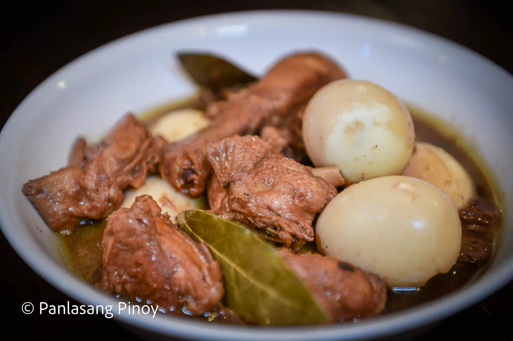

Chicken Adobo

Description
The savory, umami combination of soy sauce, vinegar, and garlic breathes life into the classic dish we know as
adobo. Who doesn’t love deliciously tender chunks of chicken that soak up an incredibly dynamic sauce? With easy,
go-to components like eggs, peppercorn, vinegar, soy sauce and bay leaves, among others, it comes as no surprise
that chicken adobo is a no fail meal in many Filipino homes. We love this dish for its vibrant flavors and addictive
aroma; that go-to mix of salty and sweet can do no wrong! As such, there’s a reason why this perfect chicken adobo
is heralded as a national dish!
Ingredients
- 2 lbs. chicken cut into serving pieces
- 1 Knorr Chicken Cube
- 5 eggs medium size
- ¼ cup soy sauce
- ¼ cup vinegar
- 1 cup water
- 3 bay leaves
- 2 teaspoons whole peppercorn
- 8 cloves garlic crushed
- 1 teaspoon sugar
- 3 tablespoons cooking oil
Steps
- Combine chicken, soy sauce, vinegar, and 5 cloves garlic. Mix well until all ingredients are well incorporated. Marinate for 30 minutes.
- Meanwhile, boil the eggs for 10 minutes. Let the eggs cool down afterwards and peel off the shell.
- Heat oil in a pan. sauté the remaining garlic until it starts to turn brown.
- Add the marinated chicken (do not include the marinade yet). Cook for 3 minutes.
- Pour the remaining marinade into the pan and add water. Let boil.
- Add bay leaves, whole peppercorn, and Knorr Chicken Cube. Stir. Cover the pan and continue cooking using low to medium heat for 15 to 20 minutes.
- Add the sugar and put the eggs into the pan. Gently stir. Cook for 2 minutes.
- Transfer to a serving plate and serve along with a huge bowl of newly cooked rice.
- Share and enjoy!